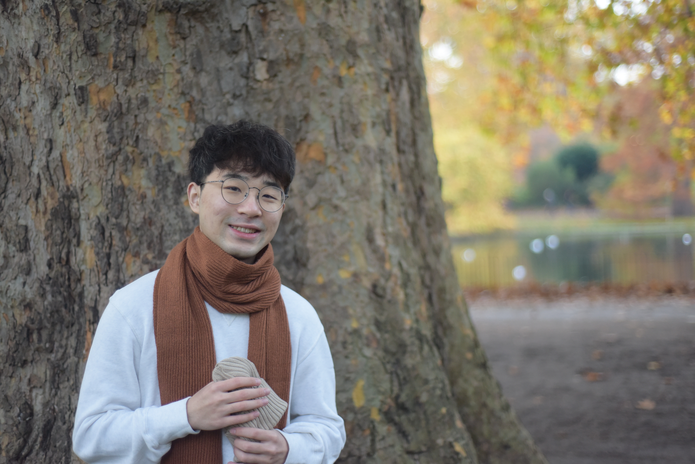

Hailang Jiang, a future phonologist.
I work on theoretical and experimental phonology.
CV: here
Email: hailang.jiang.22@ucl.ac.uk

Currently I am a master student in the Department of Linguistics at UCL.
My degree dissertation is, supervised by Dr James White.
I intend to pursue a PhD degree in Linguistics in the States, starting Fall 2024.
This summer I am going to attend the LSA Summer Institute at UMass, Amherst.
Education
- (2022-2023) MA in Linguistics (Specialization in Phonology), University College London, London, UK
- (2018-2022) BA in Economics, Peking University, Beijing, China
My research interests
- Phonotactics
- Phonological typology
- Phonetics-phonology interface
- Phonological acquisitions
- Optimality Theory
Here are my latest researches
- Boundary floating moras enforce utterance-final diphthongization on monomoraic syllables with high vowels in Chongqing Mandarin. [abstract for 30th MFM][pdf]
- Roundness is not a cue for backness harmony in languages which exhibite rounding distinctions between front and back vowels. [pdf]